Cobertura Regional
0
Regiones
Costa, Andes y Amazonía Alta/Baja N-C-S
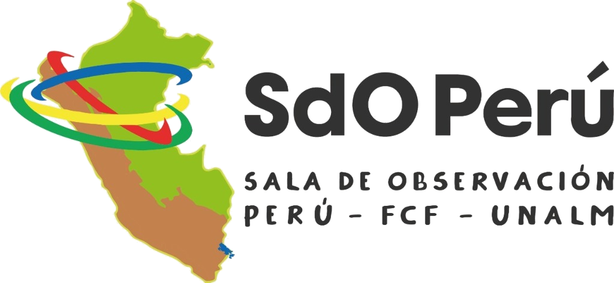
Costa, Andes y Amazonía Alta/Baja N-C-S
Col 01 (2013-2024) | Col 02 (1990-2025 en proceso)
Ucayali, Madre de Dios, Huánuco, San Martín, Loreto
| ID | Tipo Entidad | Área (ha) | Perímetro (km) | Nombre / Descripción | Acciones |
|---|---|---|---|---|---|
| No hay entidades dibujadas o importadas. Usa la herramienta de dibujo o importa archivos GIS. | |||||
Registro gráfico de investigaciones, pasantías internacionales, monitoreo de campo y talleres comunitarios realizados por el equipo de la Sala de Observación de la FCF - UNALM:
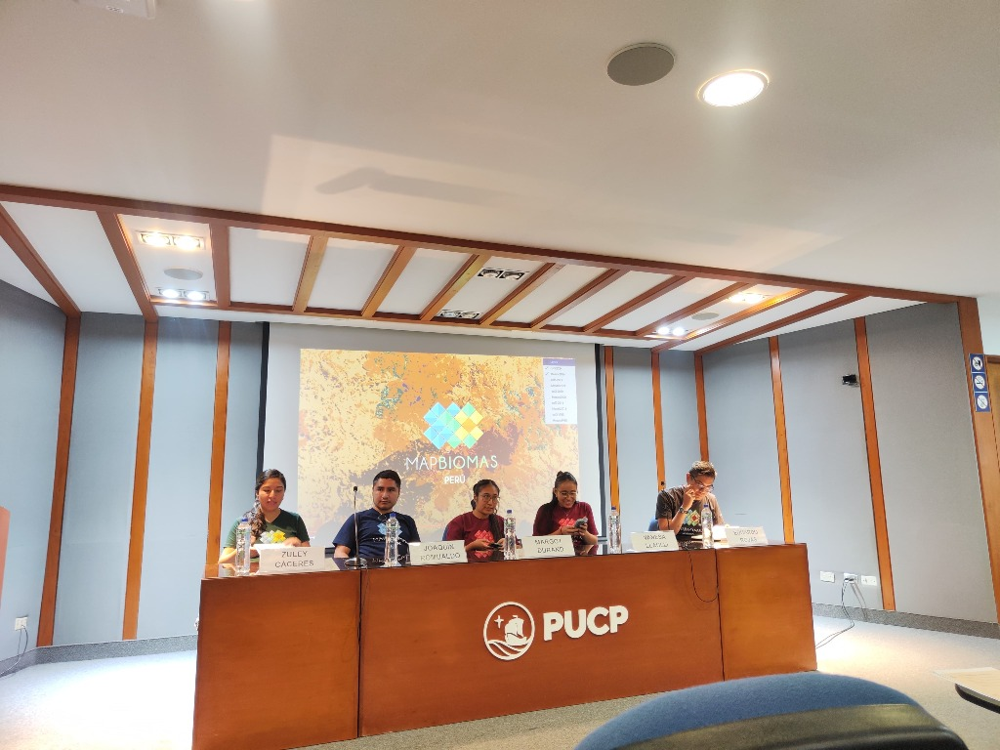
Mesa técnica de presentación oficial de la iniciativa MapBiomas Perú con investigadores de la FCF UNALM.
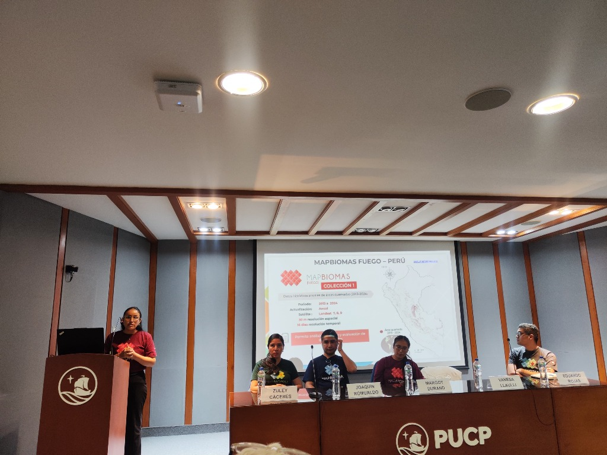
Presentación de resultados del monitoreo histórico de incendios 2013-2024 en el auditorio PUCP.
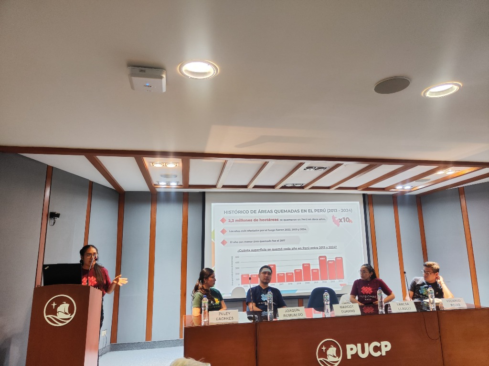
Exposición de métricas oficiales: 2.3 millones de hectáreas afectadas por el fuego en el Perú.
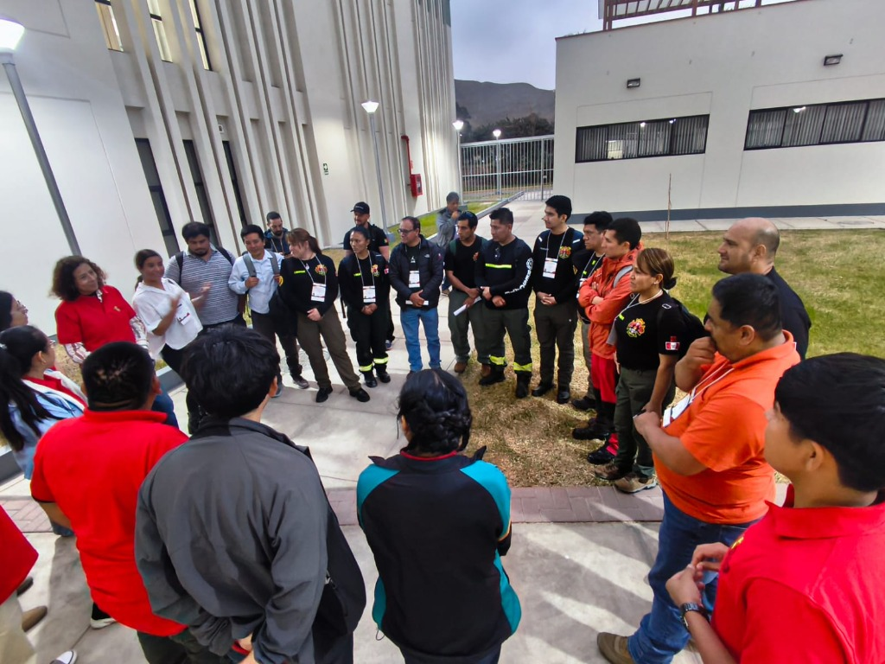
Jornada práctica de articulación y entrenamiento con bomberos forestales para el monitoreo de incendios.
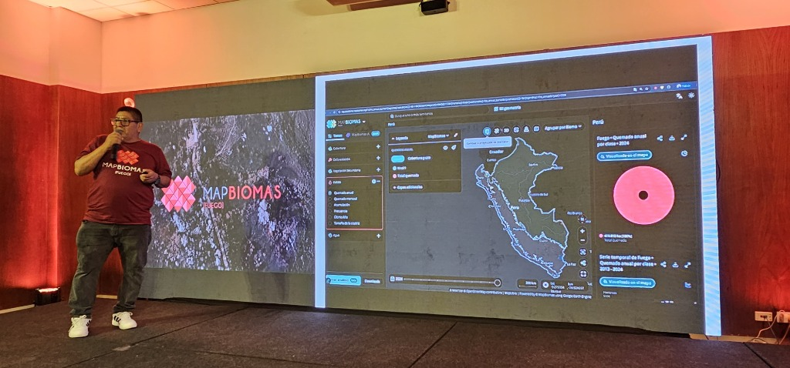
Exposición de los resultados del monitoreo histórico de áreas quemadas 2013-2024 en el auditorio nacional.

Inspección de alta resolución espacial para la clasificación de uso de suelo y dosel arbóreo.
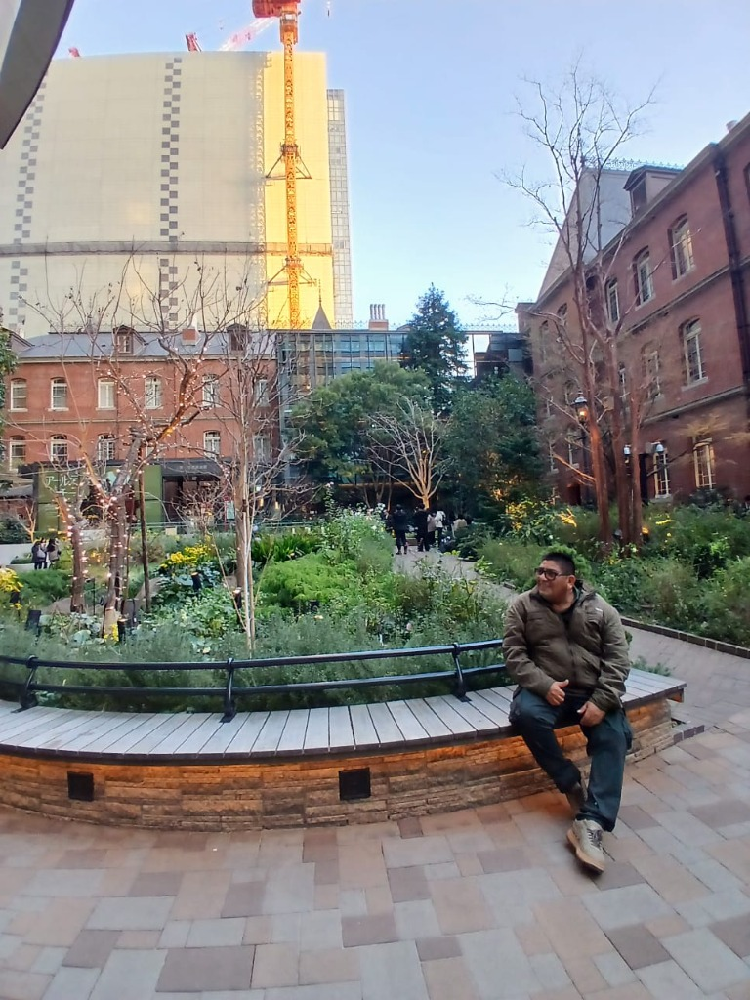
Pasantía institucional e investigación de infraestructura geoespacial forestal y urbana en Japón.
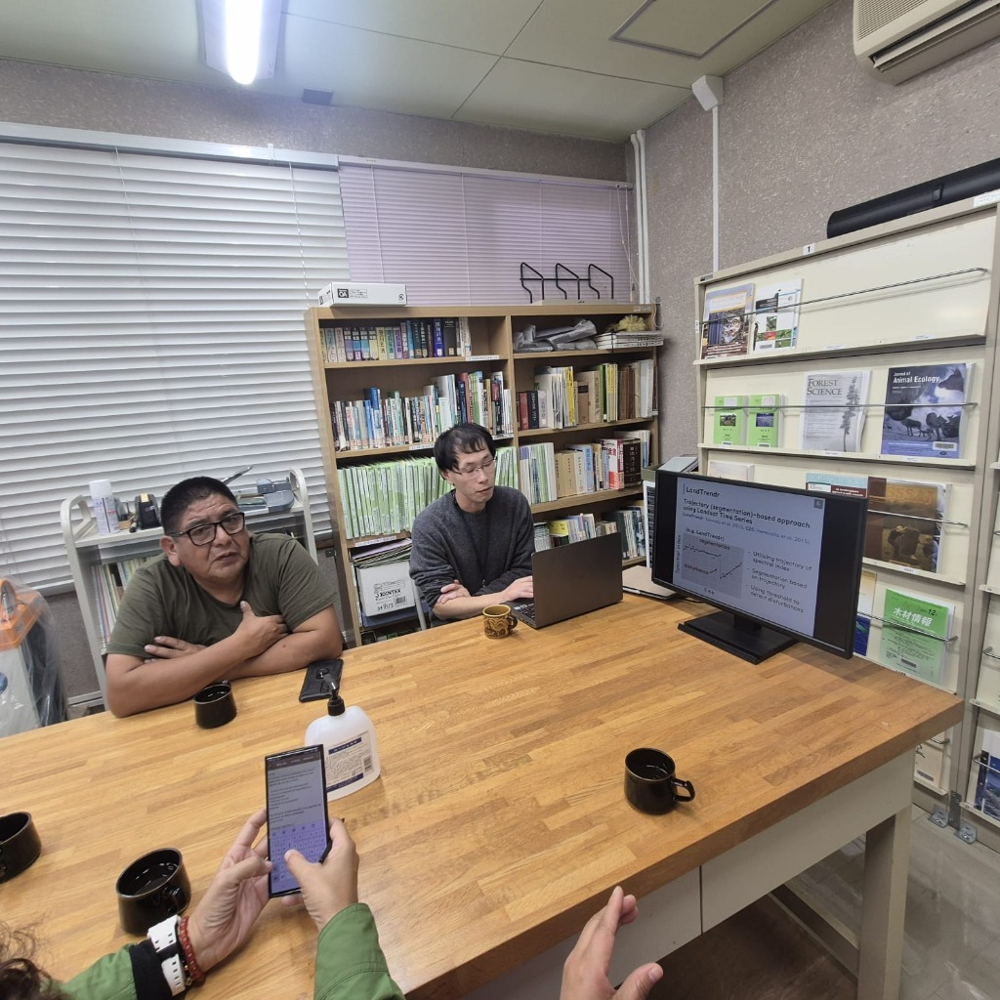
Procesamiento de datos satelitales en campo y validación participativa con investigadores forestales.

Levantamiento de parcelas de control y vuelo no tripulado para estimación de biomasa forestal.
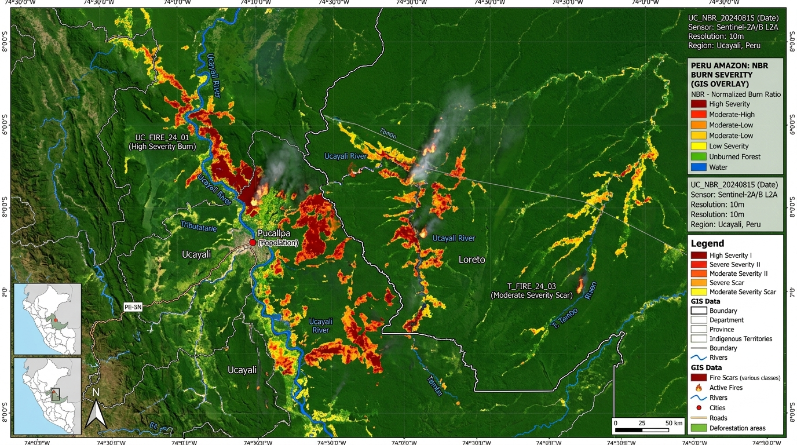
Capacitación en geolocalización y conservación de recursos hídricos en comunidades altoandinas (3182 msnm).
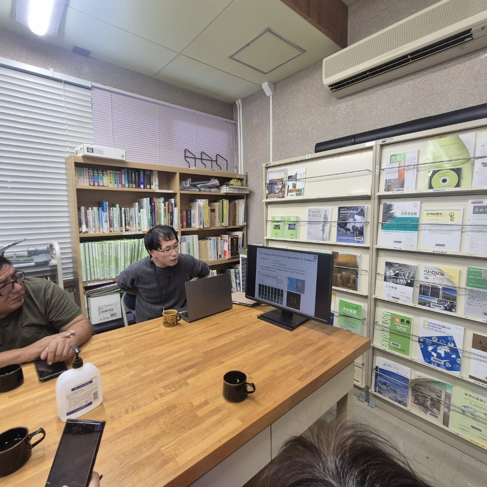
Análisis de series temporales de satélite para el mapeo de degradación y deforestación forestal.
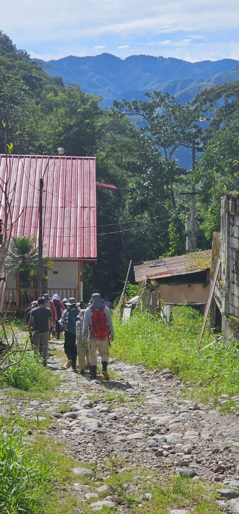
Expedición de campo y validación de biomasa forestal en montaña en el Distrito de San Ramón.